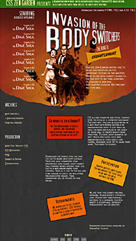

Invasion of the Body Snatchers Switchers
Invasion of the Body Snatchers (1956) is a thrilling, disturbing classic science fiction/alien film from veteran producer Walter Wanger. [Wanger had just been released from prison in the early 50s for attempted murder. He had been imprisoned for a short 4-month jail term for the 1951 shooting incident of the lover (MCA agent Jennings Lang) of his unfaithful movie-star wife, Joan Bennett. The incident provided an indirect inspiration for the Billy Wilder movie The Apartment (1960).]
It was originally based upon a three-part serial story written by Jack Finney that appeared in Colliers Magazine in late 1954, and then in 1955 was rendered into an expanded novel, The Body Snatchers. The screenplay, written by Daniel Mainwaring (who also wrote the script for the classic noir Out of the Past (1947)) was aided, according to some sources, with uncredited scriptwriting and dialogue direction by Sam Peckinpah (the great Western director who appears in a bit cameo part as a meter reader).
A quintessential, black and white B-picture, it was precisely-executed and packed with action by director Don Siegel, plus a scary musical score from Carmen Dragon. The subtle, low-budget film (at about $420,000) is very effective in eliciting horror with slow-building tension, even though there are no monsters (just indestructible plant-like pods), minimal special effects, no violence in the take-over of humans, and no deaths. The film had a few preliminary titles: Sleep No More, Better Off Dead, and They Came From Another World before the final choice was made.
The psychological sci-fi film was re-made twice:
- 1. Philip Kaufman's adaptation Invasion of the Body Snatchers (1978) with Donald Sutherland and Brooke Adams (and featuring cameo roles by Kevin McCarthy as a man running on the freeway and Don Siegel as a cabdriver) and set in San Francisco and nearby Mill Valley, with the tagline: "You'll never close your eyes again"
- 2. Abel Ferrara's The Body Snatchers (1994) - the book's original title - with Gabrielle Anwar, Meg Tilly and Forrest Whittaker, and set on a Southern military base.
The original film would become more and more revered and distinctive as time passed.
The theme of the cautionary, politicized film was open to varying interpretations, including paranoia toward the spread of a harmful ideology such as socialistic Communism, or the sweeping mass hysteria of McCarthyism in the 1950s and blacklisting of Hollywood, the spread of an unknown malignancy or virulent germ (read fear of annihilation by 'nuclear war'), or the numbing of our individuality and emotional psyches through conformity and group-think. Yet its main theme was the alien (read 'Communist') dehumanization and take-over of an entire community by large seed pods (found in basements, automobile trunks, a greenhouse, and on a pool table) that replicated and replaced human beings. And it told of the heroic struggle of one helpless but determined man of conscience, a small-town doctor (McCarthy), to vainly combat and quell the deadly, indestructible threat.
This relentlessly haunting film received no Academy Award nominations. It was originally released at 80 minutes, and then reissued at 76 minutes in 1979. The prologue and its unconvincing matching epilogue were not in the original shooting of the film and were later tacked on. (The studio-imposed footage was removed in the 1979 re-issue.) Allied Artists wanted to soften the paranoia of the original and provide a more hopeful ending with the framing device. Executives at the studio also forced Wanger to release the film in SuperScope - an anamorphic widescreen process that altered the original 1.33:1 ratio that the cinematographer had used.
To see the effects of print media switching, select Print Preview. To see the effects of projection switching, we recommend that you use Opera's projection mode (F11).